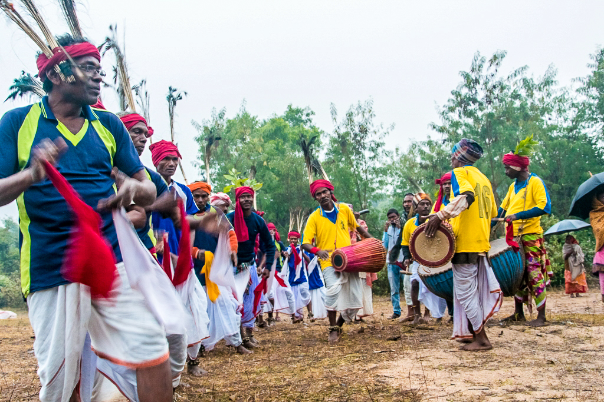
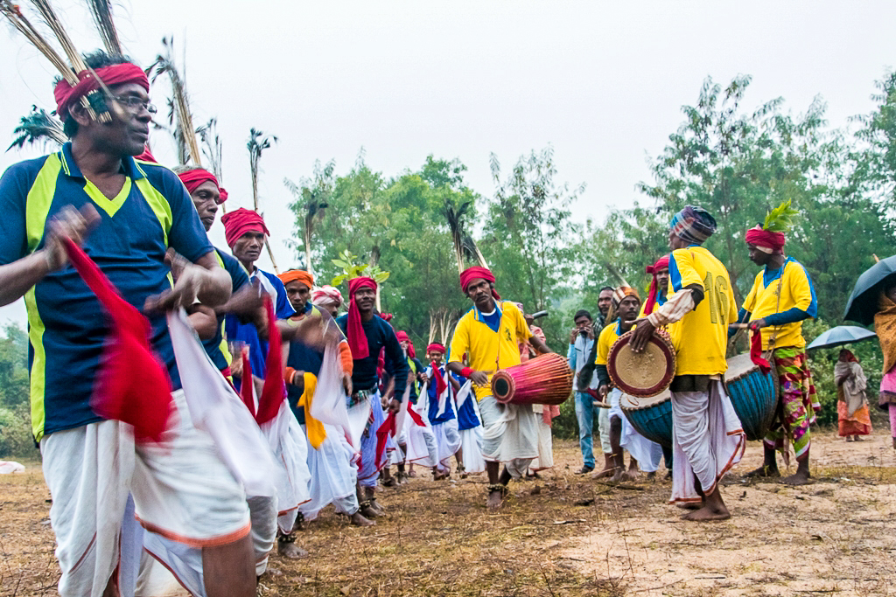

Integrated Agroforestry and Regenerative Agriculture
\Sanjeevan is a collaborative initiative focused on transforming local ecosystems through Integrated Agroforestry and Regenerative Agriculture. Rooted in a systems-based approach, it combines the ecological benefits of agroforestry with the soil-restoring and climate-smart practices of regenerative agriculture. The aim is to build local climate-resilient, biodiverse, and productive landscapes that generate sustainable livelihoods, improve local nutrition, and strengthen market systems that drive lasting change.
\What We Specialize In
\We work in regions and communities on the frontier\'97areas facing acute risks of agricultural collapse, livelihood loss, and nutritional insecurity. At a systems level, the core challenge is how to regenerate and productively use existing resources, moving away from extractive practices toward restorative, circular approaches.
\Thematic Focus Areas
\- \
- Whole Food Systems Approach \
- Agroforestry, Ecological Restoration & NTFPs \
- Carbon Sequestration & Regenerative Practices \
- Circular Bioeconomy \
- Gender Mainstreaming in Agriculture and Forestry \
Our Approach
\ \Reinforce conservation and productivity
\Our integrated agroforestry model is anchored around local water sources, where agricultural practices and livelihood activities are designed to reinforce conservation and productivity. Rather than depleting resources, we are building localized ecosystems that sustain themselves that enhance water efficiency, improving yields, and contributing to better nutrition and income at the community level.
\ \Access to marketplace
\We are building market systems by enabling knowledge, access, and connection through structured marketplace mechanisms. Our market linkage strategy includes product tracing, value addition activities such as processing, and alignment with market demand through ongoing analysis. These interventions also generate income by enabling access to carbon markets.
\ \Enabling technology adoption
\Solar power is a key enabler in our approach, providing reliable energy for water pumps, drip irrigation systems, soil moisture sensors, dryers, and other essential infrastructure. In many of the regions where we work, we harness the abundance of sunlight to sustainably meet these energy needs.
\How We Work
\We work at the intersection of landscapes, livelihoods, and climate resilience\'97starting with place-based diagnostics and growing into long-term, systemic partnerships.
\- \
- Identify Transformative Ecosystems: We begin by identifying local agro-ecological zones where integrated agroforestry and regenerative agriculture can act as levers for holistic transformation\'97improving productivity, resilience, and ecological health. \
- Spot Entry Points for Impact: Working with local actors, we map opportunities where targeted interventions\'97in agriculture, water systems, nutrition, or income diversification\'97can generate systemic change. \
- Diagnose Problems, Co-Design Solutions: We undertake structured assessments to understand local challenges and potentials. Using a combination of systems thinking, participatory tools, and technical expertise, we co-design context-specific solutions with communities and partners. \
- Build Collaborative Ecosystems: We convene multi-stakeholder ecosystems, engaging farmer networks, civil society, research institutions, private sector actors, and government bodies to align around shared objectives and enable collaborative implementation. \
- Facilitate Systemic and Outcome-Based Financing: We develop financing pathways by blending government schemes, donor grants, CSR, and private capital. Where feasible, we explore outcome-based models\'97tying financing to results across livelihoods, carbon, nutrition, or water security. \
- Activate and Scale Integrated Solutions: Our focus is on integrated delivery\'97from on-farm pilots to district-level scale. This includes technical training, capacity building, value chain development, institutional strengthening, and monitoring systems that track real-world impact. \
Our Work
\We are piloting this approach in two districts of West Bengal - Purulia and Jhargram districts in West Bengal. These two drought-prone districts in West Bengal face severe environmental degradation, low soil fertility, erratic rainfall, and unstable agricultural livelihoods. Hilly terrain, poor water retention, and over-reliance on rainfed paddy farming limit income opportunities and drive seasonal migration.
\ \Problem Indicators
\- \
- 40% of arable land is degraded. \
- 33% of food produced for human consumption is either lost or wasted. \
- 2 billion people suffer from various forms of malnutrition. \
- 70% of freshwater withdrawals are related to food and agriculture. \
Vision
\- \
- 10,000+ smallholder farmers. \
- 16,000+ hectares under agroforestry & regenerative cultivation. \
- Long-term outcomes: Food & income security, water resilience, ecosystem regeneration. \
Implementation Model Components
\ \The approach is anchored in three key components.
\ \- \
- Homestead Agroforestry: Built around the household environment, this approach utilizes available natural resources to support nutrition, income, and ecological resilience. It emphasizes integrated farming systems that include diverse crops, small livestock, and organic inputs to enhance self-sufficiency and sustainability at the homestead level. \
- Farm-Based Agroforestry: Tailored for slightly larger land parcels, this brings together tree cultivation with intercrops to boost both ecological and economic outcomes. It encourages resource-efficient practices, diversified production, and regenerative inputs to improve long-term land health and farm viability. \
- Regenerative Paddy Cultivation: Focusing on transforming traditional rice farming, this promotes water-saving methods and seasonal diversification. It aims to lower environmental impact, improve year-round productivity, and drive integrated systems that link food security with climate resilience. \
Our Work in Pictures
\ \
\
\
\
 \
\
 \
\
Benefits of Agroforestry and Regenerative Agriculture
\ \
\
- \
- Soil Conservation: Mitigating Soil Erosion and Improving Soil Fertility. \
- Water Management: Increasing Water Infiltration and Reducing Evaporation Losses. \
- Carbon Sequestration: Absorbing Atmospheric CO2 and Offsetting Carbon Emissions. \
- Diversified Livelihoods: Income from Fruit-bearing Trees and Income from Medicinal Plants. \
Get In Touch With Us
\For more information, please contact Mr. Soumya Chando of MANT.
\ \